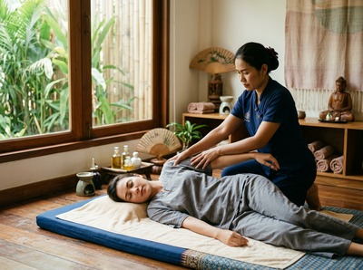

A stiff neck or tight, aching shoulders can make the simplest movements feel like a significant effort.
Whether it hits you first thing in the morning or builds through a long day at a desk, neck and shoulder stiffness is one of the most common reasons people seek massage therapy. It is also one of the conditions that responds well to targeted, skilled treatment. At Serendipity Massage Therapy & Wellness in Glasgow city centre, this is exactly the kind of problem our therapists work with every day.
Neck and shoulder stiffness means reduced range of motion and discomfort when moving, turning, or flexing the neck and upper shoulders. The clinical description of neck stiffness on Wikipedia notes it commonly involves muscle strain, soft tissue tension, and in some cases the cervical spine. The muscles most often affected are the levator scapulae, the upper trapezius, and the sternocleidomastoid — the muscles that take the strain of poor posture and repeated load.

Common triggers include poor sleeping position, long hours at a screen, stress-driven muscle tension, and not giving the upper body enough time to recover. NHS Inform's guidance on neck problems notes that pain can spread to the shoulders, arms, and upper back. It also confirms that most cases get better with hands-on treatment and do not need medical intervention.
Massage works directly on the soft tissue causing the problem. Sustained pressure releases trigger points, improves blood flow, and reduces the muscle guarding that keeps the neck and shoulders locked tight. A systematic review published on PubMed Central found that massage produced clear short-term gains for both neck and shoulder pain, with evidence drawn from randomised controlled trials across several styles — including traditional Thai massage.
Traditional Thai massage uses acupressure along sen lines, assisted stretching, and rhythmic compression. The stretching element creates length in the neck muscles and upper trapezius, restoring the range of motion that stiffness has taken away. Thai oil massage uses long, flowing strokes to warm the tissue more gradually, making it a good fit when muscles are very tight or the person is sensitive to pressure. Sports massage takes a more precise approach, targeting specific knots and tight bands — especially when stiffness comes from posture or overuse.
If this sounds like something you are dealing with, book your session online and add a note about your symptoms when you do.
When you book at Serendipity at Central Chambers on Hope Street, your therapist will start by asking where the stiffness is worst, how long it has been there, and whether you have any other symptoms like headaches or pain into the arm. This is not a box-ticking exercise — it shapes the whole session. Your therapist will adapt pressure, technique, and focus to what your neck and shoulders need that day, using the methods developed by head therapist Jariya Malone.
Depending on your needs, your therapist may suggest traditional Thai massage for its stretching benefit, Thai oil massage for a gentler approach with targeted pressure, or sports massage for precise work on specific tension points. Most clients leave with a clear improvement in neck movement.
This kind of stiffness is most common among office workers who spend six or more hours a day at a screen. It also affects people who commute with their neck held in one position, manual workers doing repeated upper-body tasks, and anyone who carries stress physically through the shoulders.
New parents lifting and carrying young children are frequent visitors too, as are regular gym-goers who skip upper-body recovery. If any of that sounds familiar, regular sessions at Serendipity can stop stiffness becoming a long-term problem. Book a treatment online and start addressing it properly.
In most cases, no. Skilled massage at the right pressure will not worsen a stiff neck caused by muscle tension or posture. If your stiffness comes with numbness, tingling down the arm, or severe pain, tell your therapist before the session starts. They can adjust their approach or suggest a medical assessment first. Our therapists at Serendipity are trained to work safely and will check in with you throughout.
Many clients notice a clear improvement in movement and pain after just one session, especially when the stiffness is recent. For long-term or recurring tension, a course of sessions every two to three weeks tends to give more lasting results. Your therapist can suggest a realistic plan based on how your body responds to the first treatment.
Traditional Thai massage works well because the assisted stretching directly tackles muscle shortening and restricted movement in the neck and upper shoulders. Thai oil massage is a good option when muscles are very tight and need gradual warming before deeper work. Sports massage suits those with specific trigger points or tension from training or physical work. Your therapist at Serendipity will help you pick the right approach.
These are the most common causes, but not the only ones. Sleeping in an awkward position, sudden movements, carrying a heavy bag on one side, and physical strain can all play a part. In rarer cases, stiffness can point to a cervical spine condition. NHS Inform's guidance on neck problems advises seeing a doctor if stiffness is severe, lasts more than a few weeks, or comes with symptoms like fever or arm weakness.
Gentle heat on the neck and shoulders before a session can relax the surface muscles and help deeper work land more easily. After a session, most therapists suggest keeping the area warm and avoiding cold or draughts for a few hours. Your Serendipity therapist will give you specific aftercare advice based on your treatment.
Yes. For most cases of sudden stiffness from sleeping position or minor strain, a massage within the first day or two can ease the spasm and restore movement faster than waiting it out. If the stiffness followed an accident or impact, or if you have numbness or tingling, please get a medical assessment before booking. You can book online at Serendipity and add a note about your symptoms so your therapist is prepared.